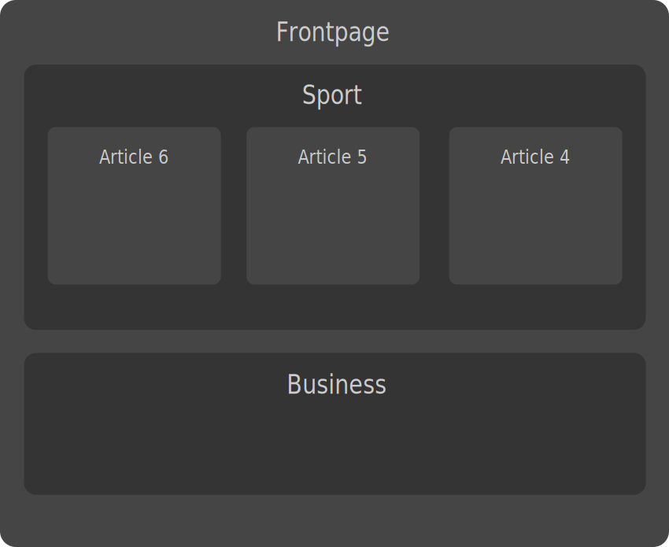
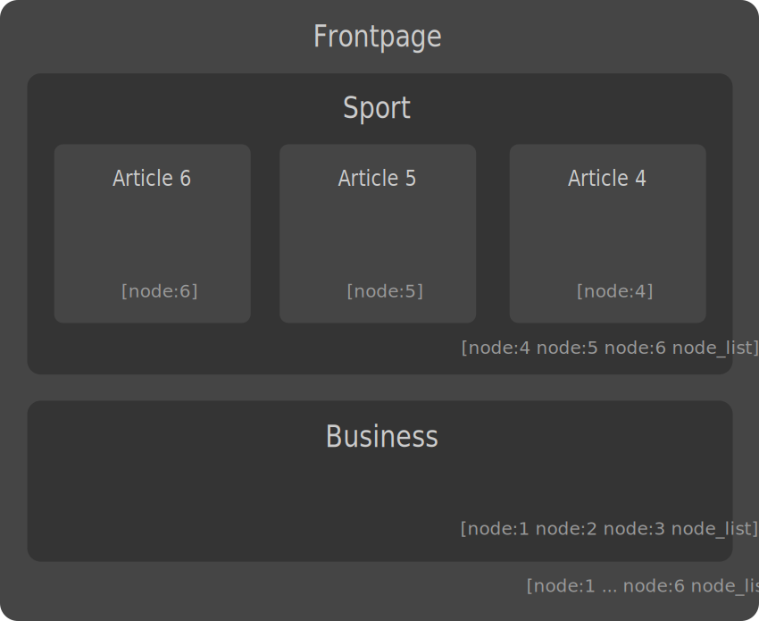
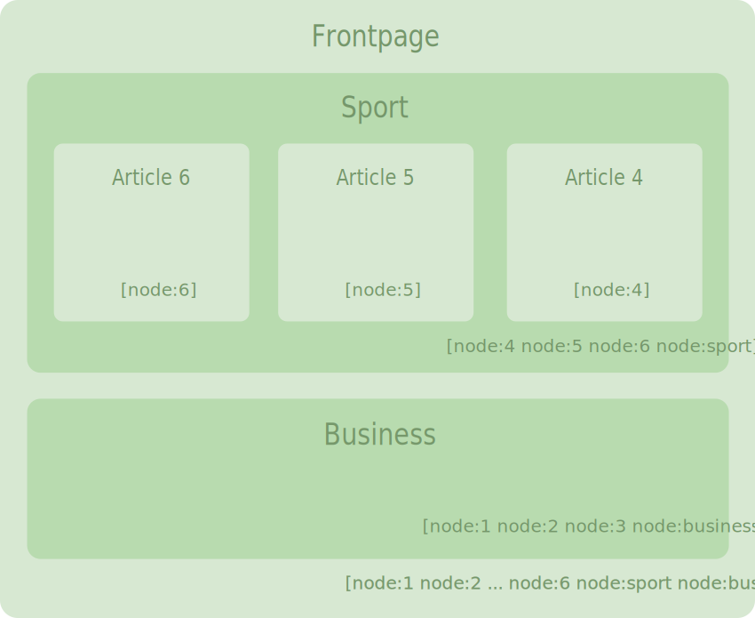

Drupal 8 Caching overview
Sascha Grossenbacher | @berdir | md-systems.chSascha Grossenbacher (@berdir)
- Lead developer at MD Systems
- Active member of Drupal community since 2008
- Maintainer of the Entity system and plenty of contrib projects
- "Core generalist", top 5 D8 contributor
- #3 on Drupal answers
MD Systems - top contributors
- D8 expert
- D8 media expert - lots of media clients
- 20% of every project to the community
- Full projects, audits, bootstrap weeks, consulting, architecture, ...
Topics
- Basics
- Cache Backends
- Cache bins
- Cache invalidation
- Render caching
- Cacheability metadata: Keys, Tags, Contexts, Age
- Page cache & BigPipe
Basic Cache API
Why cache?
Goal
Improve performance
How
Store the result of slow calculations so that they do not need to be
executed again
Get / Set
$key = 'my-unique-cache-key';
if ($cache = \Drupal::cache()->get($key)) {
$data = $cache->data;
}
else {
$data = my_slow_calculation();
\Drupal::cache()->set($key, $data);
}
// Alternative for multiple items
\Drupal::cache()->getMultiple($keys);
\Drupal::cache()->setMultiple($items);
Static cache
Static caching refers to the concept doing in-memory, per-request caching
In Drupal 7 and non-OOP code in Drupal 8, the function drupal_static() is often used
In Drupal 8, using a *non-static* property on a service works in the same way
Static and persistent cache
Cache backends usually do not use static cache, requesting the same item twice results in two queries
protected $data;
protected function getData() {
if ($this->data === NULL) {
$key = 'my-unique-cache-key';
if ($cache = $this->cacheBackend->get($key)) {
$this->data = $cache->data;
}
else {
$this->data = $this->buildData();
$this->cacheBackend->set($key, $this->data);
}
}
return $this->data;
}Cache backends
Storage for cache items
Core
- Memory: In-Memory storage, not persisted across requests
- Database: Default storage in the (SQL) database
- APCu: Shared-Memory, not shared with CLI/multiple servers
- Null: No caching at all
Contrib
- Slushi Cache: A database backend with a configurable max lifetime
- Redis: Drupal 8 version maintained by me. Only alpha but heavily used by us.
- Memcache: No personal experience with the 8.x version. Alpha
ChainedFast Backend
Problem: APCu is fast but not shared across multiple servers/with drush
- Backend that wraps a fast and a consistent backend.
- A last-write timestamp is stored in consistent backend.
- Loads from fast first, if missing or too old, fetch from consistent backend
- If it exists there, update fast backend
BackendChain
Limited use cases, no non-test uses right now in core
Can be used as an alternative to the static cache pattern shown before
$chain = new BackendChain('noop');
$chain
->appendBackend(\Drupal::cache('static'))
->appendBackend(\Drupal::cache('default'));
$chain->get('my-unique-cache-key');
$chain->get('my-unique-cache-key');
Cache bins
A container for cache entries with a configurable backend
Standard bins
default- Default, for small-ish, few key variationsbootstrap- For small caches used on most requestsdata- Bigger caches, many key variationsrender- Used by the render cache and page cache, huge amount of keysdiscovery- Small, frequently used, usually for plugins and similar discovery processesconfig- Used for caching configurationstatic- Memory only, when persistence is not desired
Define your own
cache.your_bin:
class: Drupal\Core\Cache\CacheBackendInterface
tags:
- { name: cache.bin }
factory: cache_factory:get
arguments: [your_bin]
Configuration
// Use redis by default.
$settings['cache']['default'] = 'cache.backend.redis';
// Use the null backend to disable caching for certain bins.
$settings['cache']['bins']['render'] = 'cache.backend.null';
How to configure redis (on platform.sh): https://docs.platform.sh/frameworks/drupal8/redis.html
Intermezzo: Development settings
Never develop without using sites/example.settings.local.php
- Enables verbose error display
- Disables CSS/JS aggregation
- Can disable render cache
Cache invalidation
There are only two hard things in Computer Science: cache invalidation, naming things and off-by-one errors.http://martinfowler.com/bliki/TwoHardThings.html
Delete
In case there is a single or only a few cache item with known keys, delete them directly
\Drupal::cache()->delete('my-key');
\Drupal::cache()->deleteMultiple(['my-key:de', 'my-key:en']);
\Drupal::cache()->deleteAll();
Faster than cache tags, no runtime overhead. If possible, just write new caches instead of using delete()
Invalidate
Same methods as delete, except invalidate*(). Does not actually delete just marks records as invalidated.
\Drupal::cache()->invalidate('my-key');
\Drupal::cache()->invalidateMultiple(['my-key:de', 'my-key:en']);
\Drupal::cache()->invalidateAll();
Extremely rarely used. Core has a single invalidate call and that is likely wrong*.
* Might be my fault.
Expiration
Set a fixed expiration time for a cache item on write.
Examples
// Cache for 10 minutes, not known if/when it changes.
$cache->set($key, $data, REQUEST_TIME + 600);
// $data is only valid today.
$cache->set($key, $data, strtotime('tomorrow midnight'));
Note: Expiration is a timestamp, not an age
Cache tags
Dependencies of your cache: entities, configuration, custom
// Data must be invalidated if node 1 or the node settings change.
$cache->set($key, $data, ..., ['node:1', 'config:node.settings', 'my_tag']);
// Tag invalidation is across all bins.
$cache_tag_invalidator->invalidateTags(['my_tag']);
Cache::invalidateTags(['my_tag']);
Entity and Config cache tags are invalidated automatically. Use custom cache tags for unknown amount of cache item variations.
PS: ... = CacheBackendInterface::CACHE_PERMANENT
Behind the Scenes: Cache tags
- Invalidations of each cache tag are counted by the checksum service.
- When writing a cache item, the sum of invalidations of all given cache tags is stored as checksum
- When reading the cache item, the invalidations are counted again and compared
- If the checksum is different, then the item is invalid.
Runtime overhead on every cache read. Limit cache tags to the required minimum.
Allow invalid
Invalid data can still be used. For invalidate(), expiration and tags.
$cache = \Drupal::cache()->get('my-key', TRUE);
if ($cache && $cache->valid) {
return $cache->data;
}
elseif (\Drupal::lock()->acquire('my-key')) {
// Rebuild and set new data.
}
elseif ($cache) {
// Someone else is rebulding, work with stale data.
return $cache->data;
}
else {
// Wait or rebuild.
}
Other uses: Rebuild in background (queue), min-age
Render caching
Input: Render arrays
Output: HTML
Delay processing
- Render caching can not cache what already happened
- Do a little as possible initially
- Only define #theme/#type, #pre_render callbacks and information needed for them
Process Miss
- Controller/Block/... defines initial render array
- Renderer::render($build), finds #cache
- Renderer ask RenderCache for cached result => MISS
- Render calls #pre_render and then passes to ThemeManager::render()
- Returned HTML is put in #markup, passed to RenderCache
- RenderCache removes all keys except #markup, #cache and writes to cache
- HTML is returned
Process Hit
- Controller/Block/... defines initial render array
- Renderer::render($build), finds #cache
- Renderer ask RenderCache for cached result => HIT
- HTML is returned
Cacheability metadata
- Cache Key
- Cache Tags
- Cache Contexts
- Max Age
Cache Key
Is my data worth caching? If yes, what identifies my data?
Cache Contexts
Does my output vary by something?
Examples: theme, language, user roles, permissions, URL, query
arguments, timezone, ...
Cache contexts are hierachical: user, user.permissions
Danger: Not setting the correct contexts can result in sensitive data being shown to normal users
Default cache contexts: theme, languages:language_interface,
user.permissions
Cache Contexts
Cache Tags
What things does my output depend on?
What changes require that my data is regenerated?
Max Age
When does my output become outdated?
- Permanent (-1)
- Age in seconds (3600)
- Uncacheable (0)
How is this stored?
{cache_render}
cid: entity_view:node:4:full:[languages:language_interface]=en
:[theme]=bartik:[timezone]=Europe/Berlin:
[url.query_args:key]=:[user.permissions]=da0b1c64....:
[user.roles]=is-super-user
data: a:3:{s:7:"#markup";O:25:"Drupal\Core\Render\Markup....
expire: -1
tags: config:filter.format.basic_html config:image.style.large
file:1 node:4 node_view rendered taxonomy_term:1 user:1
user_view
checksum: 17
Bubbling
Problem: List cache tags
Every node view on your site has the node_list cache tag
Add a single "Promoted events" blog that lists event nodes with promote=1
Every time *any* node is saved, the block and every page containing that block is invalidated
Solution: Views Custom Cache Tag
Allows to use a configurable cache, e.g. event:promoted
Placeholders: news:section:{{ raw_arguments.arg1 }}
Requires code to define/invalidate cache tags in a hook_entity_presave()
Invalidation example
Changes
- A new node (7) is created in the "Sport" section Invalidations: node:sport, node_list
- Node 2 is changed Invalidations: node:2, node:sport, node_list
Invalidations

Next request
Next request
Next request

Advanced render caching concepts
Lazy Builder
For self-contained parts of a page
Examples: Blocks, Comment form, Poll, CSRF tokens, Flag links
A callback with arguments (scalar values only)
Can be put as a placeholder in cached data if uncacheable/many variations
Lazy Builder example
$output['comment_form'] = [
'#lazy_builder' => ['comment.lazy_builders:renderForm', [
$entity->getEntityTypeId(),
$entity->id(),
$field_name,
$this->getFieldSetting('comment_type'),
]],
'#create_placeholder' => TRUE,
];
Cache Redirects
Cache contexts can bubble up.. but they are part of the key that needs to be known initially
The secret is that two cache entries are stored, one just contains all the cache contexts
Cache Redirect Example
- Get render cache for node 1 full, with default cache contexts: theme, language, user.permissions
- Cache hit, but the result is a redirect: This cache varies also by timezone and query args
- New cache ID is built, fetched and the result of that is returned
- On a cache miss for the new cache contexts, it is build.
- If new contexts were added, the original cache item with the redirect is update to include those too.
Page caching
Internal Page Cache
- Only for visitors without a session
- Cache Key is the URL, including all query arguments, caches permanently
- Supports cache tags
- Does not support cache contexts or max age*
- Does not respect "Page cache maximum age" but does respect the "Expires" header on the response
- Caches response objects
- Fast
Dynamic Page Cache
- Caches full pages excluding placeholders, replaces them before sending the response
- Supports cache tags, contexts and max-age
- Works for all users
- Considerably slower than Internal Page Cache
- Skips pages that has uncacheable/high-variation elements that can not be placeholdered
Big Pipe
- No longer experimental in 8.3.0
- Sends the page *with* placeholders as HTML tags
- Browser can start to render the page
- Drupal then starts to process placeholders and sends the actual content *in the same request*
- Javascript then replaces the placeholders with the actual content
- Improves perceived performance, time until fully rendered is the same
- Concept developed by Facebook